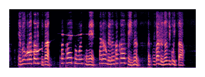


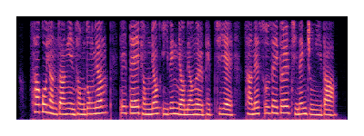


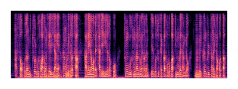
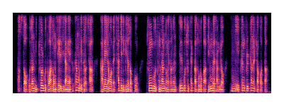

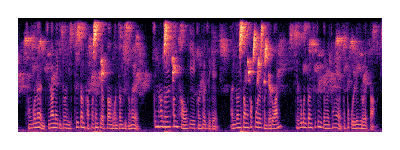
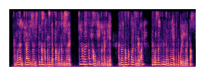
Welcome to the official page of a lightweight ACC-assisted U-Net (LAU-Net). This model enhances speech in noisy environments using harmonic attention and phase merge techniques. The code for this project can be found at https://github.com/LAU-Net/LAU-Net.git.
Skin-attachable accelerometers (ACCs) capture speech vibrations through the skin, providing a noise-robust complement to microphone (MIC) signals. However, prior multi-modal models combining these signals face trade-offs between processing overhead and performance. This study proposes a lightweight ACC-assisted U-Net (LAU-Net) for real-time speech enhancement. The LAU-Net employs a harmonic attention module to enhance spectral clarity by emphasizing speech harmonics predicted from ACC signals while only increasing the parameter count from 92.29k to 92.98k. The phase merge block of LAU-Net adaptively integrates ACC and MIC phases based on noise levels, eliminating the need for phase data training. The LAU-Net achieves a PESQ of 2.92 with 39M MACs/s on the TAPS dataset, demonstrating a balance between speech quality and computational efficiency. These results highlight the LAU-Net as a practical solution for robust and efficient speech processing with real-time edge deployment.
The spectrograms displayed in the table have a y-axis representing frequencies from 0 to 4 kHz and an x-axis representing time (s). The spectrograms are log-scaled.
| Speaker | ACC | MIC | Noisy | NsNet [1] | FSPEN [2] | Vibvoice [3] | LAU-Net |
|---|---|---|---|---|---|---|---|
| Female 1 | 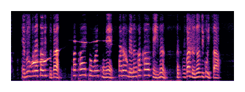 |
||||||
| Female 2 | |
|
|
||||
| Female 3 | 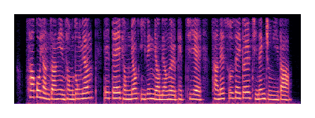 |
||||||
| Female 4 | |
||||||
| Female 5 | |||||||
| Male 1 | |||||||
| Male 2 | |
||||||
| Male 3 | 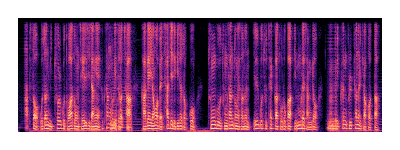 |
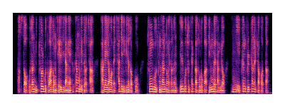 |
|||||
| Male 4 | |
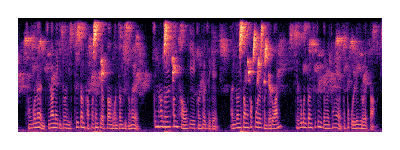 |
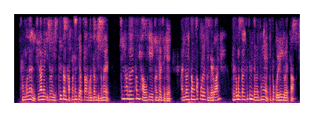 |
||||
| Male 5 |